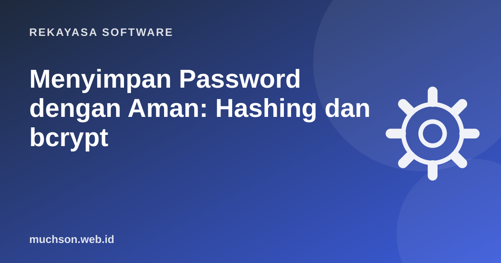

Beranda › Artikel › Rekayasa Software
Rekayasa SoftwareMenyimpan Password dengan Aman: Hashing dan bcrypt
Kebocoran database terjadi bahkan pada perusahaan besar. Pertanyaannya bukan hanya "bagaimana mencegah bocor", tetapi juga "bila bocor, apakah password pengguna ikut terbaca?". Jawabannya ditentukan oleh cara Anda menyimpan password sejak hari pertama.

Empat cara menyimpan, dari terburuk
| Cara | Bila database bocor |
|---|---|
| Teks asli | Semua password langsung terbaca. Fatal. |
| Enkripsi (bisa dibuka dengan kunci) | Bila kunci ikut bocor, semua terbuka. |
| Hash cepat (MD5, SHA-1, SHA-256 polos) | Bisa ditebak miliaran kali per detik dengan GPU dan tabel siap pakai. |
| Hash lambat + salt (bcrypt, Argon2, scrypt) | Menebak satu password saja menjadi sangat mahal. |
Apa itu hash?
Hash adalah fungsi satu arah: dari password menghasilkan "sidik jari" berukuran tetap, tetapi dari sidik jari tidak bisa dikembalikan ke password. Saat login, server menghitung hash dari password yang diketik lalu membandingkannya.
Kenapa MD5 dan SHA-256 polos tidak cukup
MD5 dan SHA dirancang untuk cepat, berguna untuk memeriksa file. Untuk password, kecepatan justru membantu penyerang: GPU modern bisa mencoba miliaran tebakan per detik. Selain itu, password yang sama selalu menghasilkan hash yang sama, sehingga penyerang memakai tabel hash siap pakai (rainbow table).
Salt: bumbu acak per pengguna
Salt adalah nilai acak unik yang ditambahkan ke password sebelum di-hash. Dua pengguna dengan password "kopi123" akan punya hash berbeda, dan tabel siap pakai menjadi tidak berguna. bcrypt dan Argon2 membuat dan menyimpan salt otomatis di dalam string hash.
Work factor: sengaja dibuat lambat
bcrypt punya parameter cost. Setiap kenaikan 1 membuat perhitungan sekitar dua kali lebih lambat. Targetnya: cukup cepat untuk satu login (puluhan sampai ratusan milidetik), tetapi sangat mahal bagi penyerang yang mencoba miliaran kali.
Contoh kode
Rekomendasi OWASP saat ini: Argon2id sebagai pilihan utama; bila tidak tersedia, scrypt; untuk sistem lama, bcrypt dengan work factor minimal 10. Jangan menulis algoritma hash sendiri.
Kebijakan password yang masuk akal
Pedoman NIST SP 800-63B (revisi terbaru) menggeser banyak kebiasaan lama:
- Utamakan panjang: izinkan password panjang (frasa sandi). Revisi 4 mensyaratkan minimal 15 karakter bila password menjadi satu-satunya faktor, dan minimal 8 bila dipakai bersama faktor kedua.
- Jangan paksa kombinasi rumit seperti "wajib simbol dan angka".
- Jangan paksa ganti berkala tanpa alasan; ganti bila ada indikasi bocor.
- Tolak password yang ada di daftar password bocor atau terlalu umum.
- Izinkan tempel (paste) agar pengguna bisa memakai password manager.
- Batasi percobaan login dan tawarkan 2FA atau passkey.
Tanya jawab
Bisakah admin melihat password pengguna?
Bagaimana memigrasi hash MD5 lama?
Apa itu pepper?
Sumber dan bacaan lanjut
- OWASP Cheat Sheet: Password Storage
- NIST SP 800-63B: Digital Identity Guidelines, Authentication
- Laravel Docs: Hashing